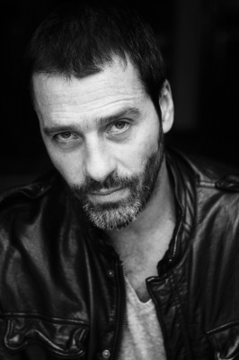

#3071 Drei Meter über dem Himmel
Alternativ: Three Steps Above Heaven (Englischer Titel)

 IMDB-Wertung: 7.0 / 10
IMDB-Wertung: 7.0 / 10  Metascore: 0
Metascore: 0 
Babi und Hugo kommen aus völlig unterschiedlichen Welten: Sie ist ein wohlbehütetes Mädchen aus der Oberschicht, er ein impulsiver Rebell, der illegale Motorradrennen und das Risiko liebt. Als sie einander kennenlernen, ist dies der Beginn einer Liebe, die nicht sein soll und dennoch beide unvermeidlich immer tiefer in ihren Bann zieht. Doch hat ihre Beziehung eine Chance?
Jahr: 2010
Dauer: 122 Minuten
FSK: 6
Land: Spanien Studio: Capelight PicturesTonspuren:
Untertitel: Deutsch,
Auflösung: 1080p (1920x816) Größe: 6952 MB
Genre: Drama, Liebe
Regisseur: Fernando González Molina
Drehbuch: Federico Moccia, Ramón Salazar
Soundtrack: Manel Santisteban
Darsteller:
 Mario Casas als H.
Mario Casas als H. María Valverde als Babi
María Valverde als Babi- Álvaro Cervantes als Pollo
- Luis Fernández als El Chino
- Pablo Rivero als Gustavo
- Daniel Casadellà als El Palote
 Carlos Olalla als Felipe Santamaría
Carlos Olalla als Felipe Santamaría-  Juan Pablo Shuk als Tipo agredido
- Àlex Maruny als Rubén
- Marina Salas als Katina
- Andrea Duro als Mara
- Nerea Camacho als Daniela
- Diego Martín als Alejandro
- Cristina Plazas als Rafaela
- Jordi Bosch als Claudio
- Joan Crosas als Padre H.
- Cristina Dilla als Madre H.
- Marta Martín als Silvia
- Víctor Sevilla als El Ventura
- Dani Herrera als El Travolta
- Marcel Borràs als Chico
- Blanca Martínez als Marina
- Henar Jiménez als Berta
- Anna Viñas als Alicia
- Pere Ventura als Abogado H.
- Òscar Rabadan als Abogado acusación
- Ariadna Gaya als Silvia Ruiz
- Iván Luengo als Niño H.
- Naomi Alves als Niña Babi
- Carolina Clemente als Inés
- Lina Forero als Rossana
- Ricardo Mestres als Tipejo
- Amparo Fernández als Jueza
 Clara Segura als La Forga
Clara Segura als La Forga- Julen Porro als Pablito
- Jorge Gudiel als El Benito
- Juan Antonio del Fresno als El Goku
- Gerard Peña als Trullols
- Alberto Carrillo als Pizzero
- Francesc Martinell als Policía
- Laura Molina als Niña colegio
- Francesc Reina als Tattooist
Datei: X:\2010(A-F)\Drei Meter über dem Himmel (2010, FSK6, 1920x816).mkv seit 20.01.2016
Festplatte: HD 2009(G-Z)-2010(A-F)
 Es gibt insgesamt 95 Filme in der Gruppe '2010(A-F)'
Es gibt insgesamt 95 Filme in der Gruppe '2010(A-F)'